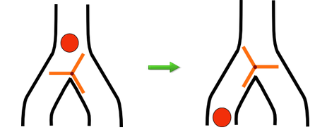
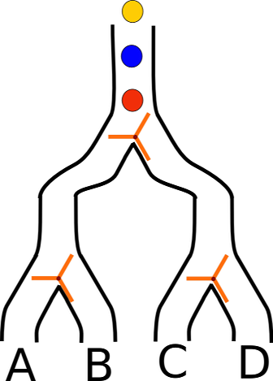

回転とびらは，パイプの中を上から落ちてきたボールの行き先を右のパイプか左のパイプに振分け（ふりわけ）ます。回転とびらは，ボールを「右に落とす」ときとボールを「左に落とす」ときがあり，それら２つの場合はボールを落とすたびに交互（こうご）に変わります。例えば，下の図では，ボールが落ちる前の場合は「左に落とす」で，ボールが落ちた後の場合は「右に落とす」に変わります。

ビ太郎は，この回転とびらを使って次のようなしかけを作りました。

3番目の黄色いボールは、どこから出てきますか？正解は「Ｂ」
赤・青・黄のボールが，それぞれの回転とびらで，どちら側のパイプに落ちるかを順に考えていきます。 最初(上)にある回転とびらでは，赤は左，次の青は右，次の黄色は左に落ちます。左側には赤と黄色，右側には青のボールが落ちます。 黄色のボールは，左側のパイプに落ちますので，左側(Ａ,Ｂ側)の回転とびらで考えます。 つ目(下)にある左側(Ａ,Ｂ側)の回転とびらでは，赤はＡ，次の黄色はＢへ落ちます。